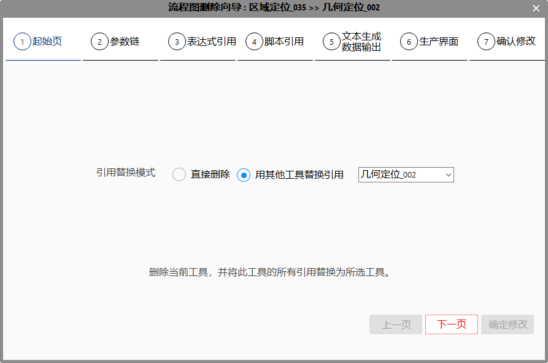
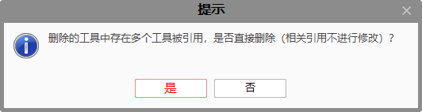
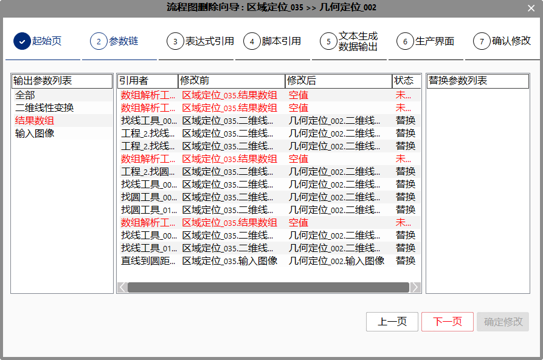
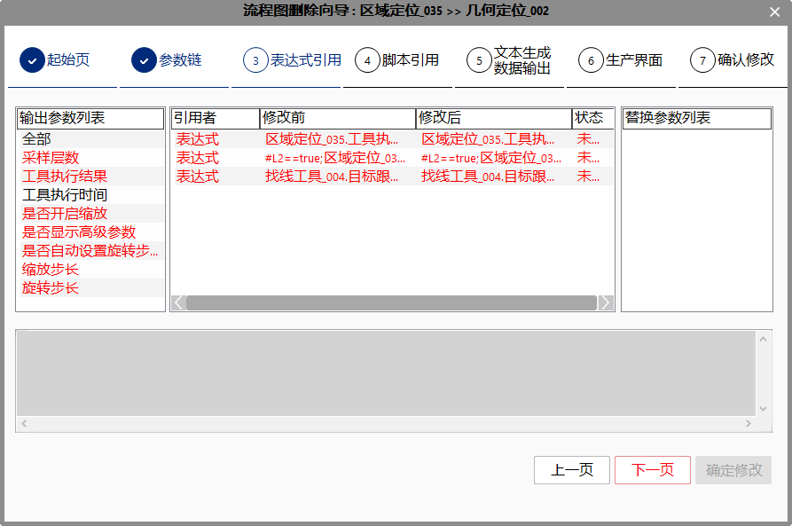
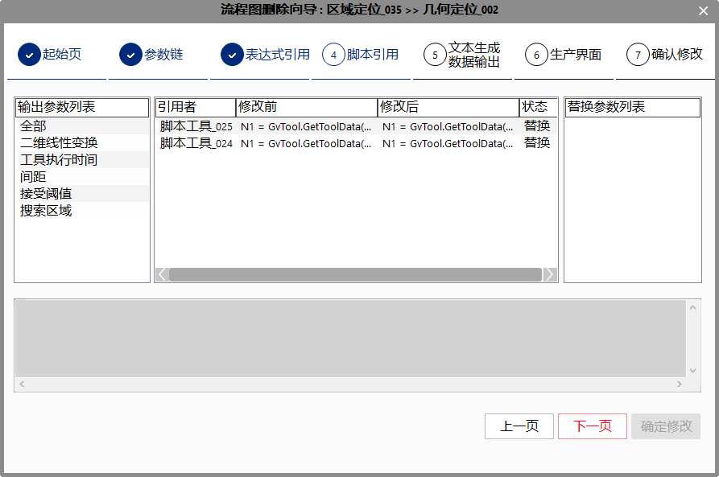
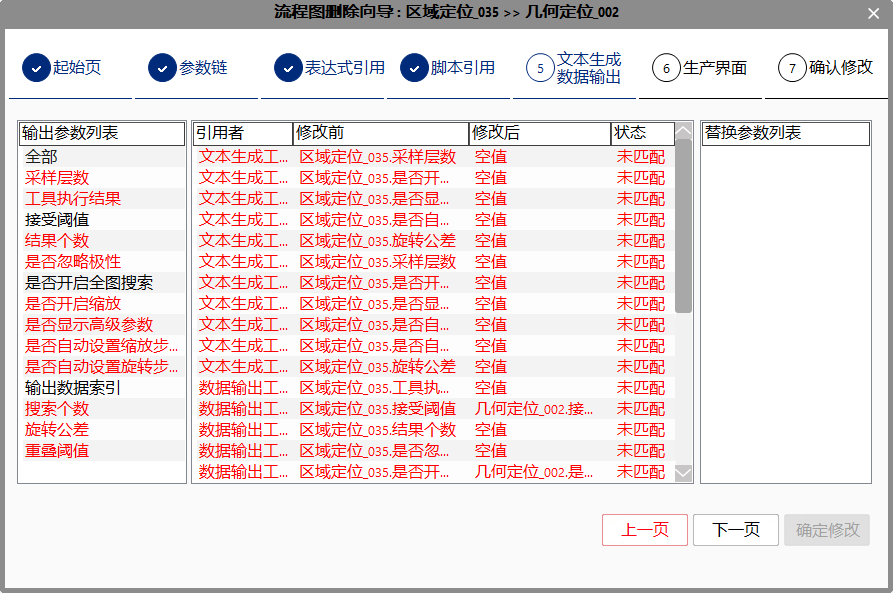
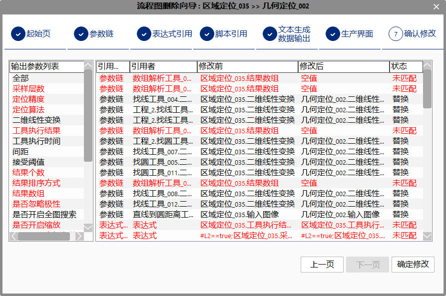
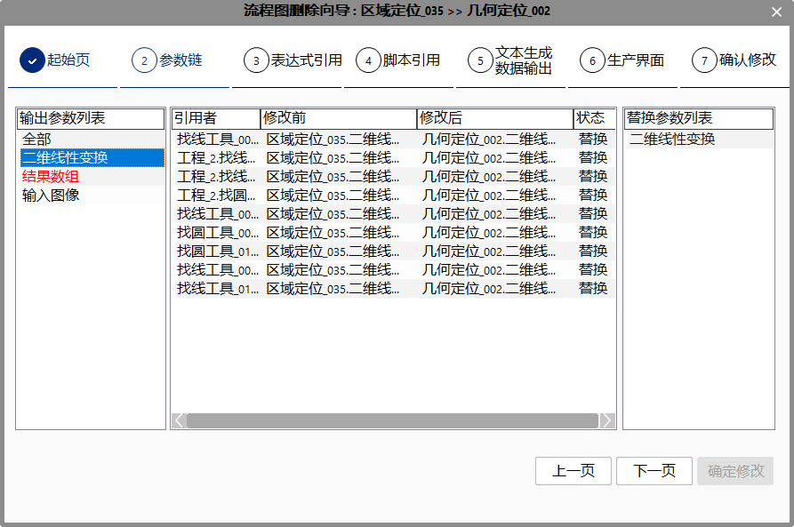
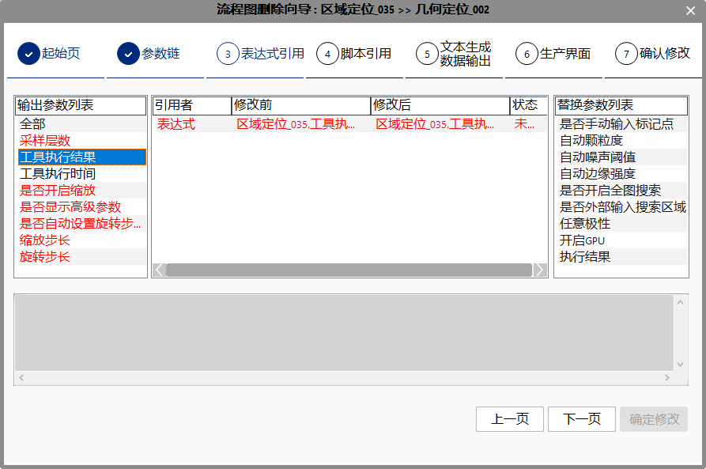
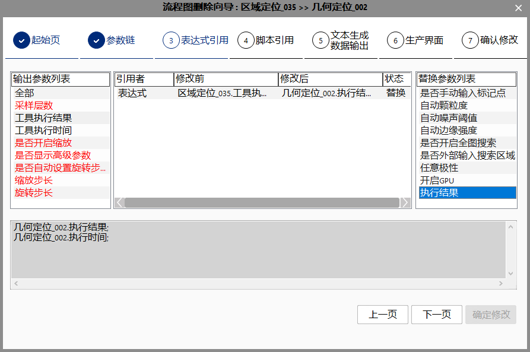

Trình hướng dẫn xóa biểu đồ luồng
Trình hướng dẫn xóa biểu đồ luồng là phần mở rộng của chức năng xóa ban đầu.
Khi xóa đối tượng công cụ (ví dụ trường hợp là công cụ), sẽ xóa hoặc thay thế tất cả các tham chiếu/liên kết sử dụng công cụ đó bởi các công cụ khác.
Ví dụ, “Tệp ảnh _ 001” với “Ảnh đầu ra” được liên kết tới “Công cụ hình thái học mức xám _ 002” với “Ảnh đầu vào” làm tham số đầu vào, khi xóa “Tệp ảnh _ 001”, sẽ gọi “Trình hướng dẫn xóa biểu đồ luồng”, và “Ảnh đầu vào” của “Công cụ hình thái học mức xám _ 002” có thể được đặt thành trống hoặc thay thế bằng công cụ cùng loại khác (thay vì “Tệp ảnh _ 001”).
“Trình hướng dẫn xóa biểu đồ luồng” xử lý các tham chiếu bao gồm:
- Chuỗi tham số
- Tham chiếu biểu thức (điều kiện nhánh, song song, vòng lặp, dừng vòng lặp)
- Tham chiếu công cụ script
- Tham chiếu công cụ tạo văn bản và công cụ xuất dữ liệu
- Tham chiếu giao diện sản xuất
Giao diện chính của trình hướng dẫn xóa biểu đồ luồng
Khi xóa đối tượng công cụ được tham chiếu bởi công cụ khác, sẽ hiện cửa sổ “Trình hướng dẫn xóa biểu đồ luồng” như hình dưới.

Chú ý
Khi chọn nhiều đối tượng công cụ để xóa, nếu có nhiều đối tượng được tham chiếu bởi công cụ khác (ngoại trừ tham chiếu chéo giữa các đối tượng trong nhóm xóa), sẽ có thông báo popup như sau:
Chọn “Có” sẽ xóa trực tiếp tất cả đối tượng chọn
Chọn “Không” sẽ hủy thao tác xóa, phần “Cửa sổ tìm kiếm” góc phải dưới sẽ hiển thị cảnh báo các đối tượng bị tham chiếu, cần xóa thủ công từng cái.
Nếu trong nhóm xóa chỉ có 1 đối tượng bị tham chiếu bên ngoài, cửa sổ trình hướng dẫn xóa sẽ hiển thị, cho phép xóa trực tiếp hoặc thay thế tham chiếu để xóa.

Các bước của trình hướng dẫn
Chọn chế độ thay thế: xóa trực tiếp hoặc thay thế tham chiếu bằng công cụ khác
- Xóa trực tiếp: xóa công cụ hiện tại và đặt tất cả tham chiếu đến công cụ này thành trống. *Lưu ý: Với công cụ script, chỉ xóa công cụ và tham số được tham chiếu, có thể gây lỗi cú pháp script cần chỉnh sửa thủ công.
- Thay thế tham chiếu bằng công cụ khác: xóa công cụ hiện tại và thay thế tất cả tham chiếu tới công cụ này bằng công cụ được chọn.
Chuỗi tham số được đặt trống hoặc thay thế, tham số không khớp sẽ bị ngắt chuỗi:

Tham chiếu biểu thức được đặt trống hoặc thay thế, một công cụ biểu thức có thể tham chiếu nhiều tham số công cụ, nếu có tham số không khớp, chỉ thay thế một phần, tham số không khớp giữ nguyên:

Tham chiếu công cụ script đặt trống hoặc thay thế: tương tự công cụ biểu thức, tham số không khớp không chỉnh sửa:

Tham chiếu công cụ tạo văn bản và xuất dữ liệu đặt trống hoặc thay thế, tham số không khớp sẽ xóa:

Tham chiếu giao diện sản xuất đặt trống hoặc thay thế, tham số không khớp sẽ xóa tham chiếu điều khiển:

Hoàn tất xóa/thay thế tham chiếu, xem lại tất cả các mục thay thế:

Chi tiết thao tác
- Lọc tham chiếu: chọn tham số đầu ra trong danh sách tham số để lọc danh sách các tham chiếu tương ứng đến tham số đó, ví dụ hình dưới

- Xử lý tham số không khớp: Khi dùng công cụ khác thay thế tham chiếu của công cụ bị xóa, hệ thống sẽ tự động so khớp tham số theo kiểu và tên tham số, nếu không tìm thấy tham số phù hợp sẽ hiện trạng thái “không khớp”:

Khi chọn một tham số đầu ra (ví dụ “Kết quả thực thi công cụ”), danh sách tham số thay thế sẽ hiển thị các tham số có thể thay thế được (ví dụ “Kết quả thực thi”), chọn tham số thay thế (ví dụ “Kết quả thực thi”), thực hiện thay thế tham số (biểu thức ban đầu “Vị trí vùng_035.Kết quả thực thi công cụ” được thay bằng “Định vị hình học__003.Kết quả thực thi”).
Nếu danh sách tham số thay thế trống, không có tham số nào có thể thay thế, không thể thực hiện thay thế, cần xử lý thủ công.
